Let's Talk About Dev Tools
Here's whats comin:
- Chrome Dev Tools and some js debugging tips
- Sublime Text 3 Packages and Customization
- How I learned to stop worrying and love the shell
- NVM && Brew (if we got time)

But... I don't like change!
- It'll stop hurting after a while, I promise
Disclaimer
- Some of you are gonna be bored at parts, sorry
- Also we're gonna need to plow through this, so if you haven't installed something we need, i recommend doing that now while we talk about browser stuff
Let's Get Started: Debugging
console.log() is not the end-all-be-all- Learn how to detect repaint and reflow issues, inspect objects/nodes more thoroughly, use handy shortcuts and emulators

Debuggin' 2
console.dir() for inspecting objects and seeing all properties (dom nodes are objects)console.profile() and console.profileEnd() will tell chrome to automatically run a code profile for youperformance.now() can be used for high res benchmarking (down to the nanosecond)
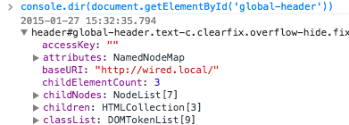
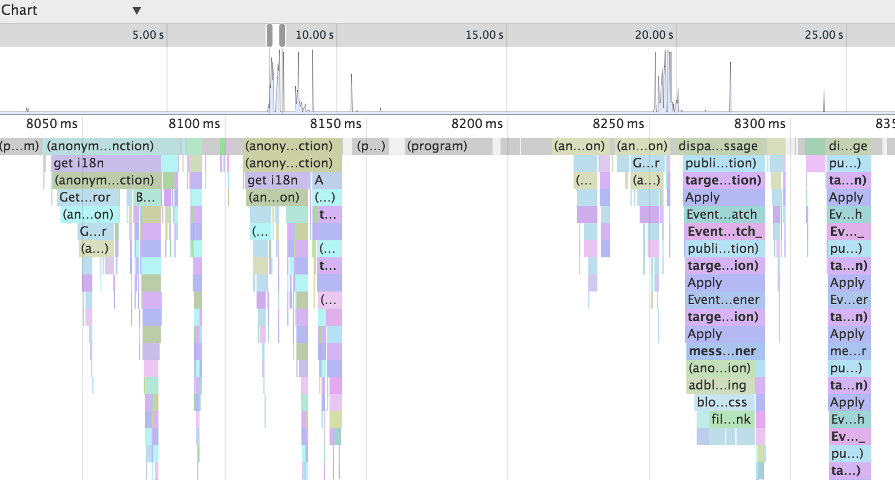
Debuggin' 3
- Besides console commands, we have a few other basic tricks we can use
- When inspecting a node,
$0 can bring it up in the console
performance.now() can be used for high res benchmarking (down to the nanosecond)- Other things to look into: using the timeline, code breakpoints
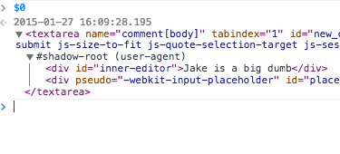
Repaint and Reflow (minor detour)
- JS execution time is fast (like, really fast), browser rendering not so much
- Any time your code causes a 'write', the browser has to calculate how to repaint that (and whether it needs to reflow, even worse)
- Best practice is to front-load your 'reads' and then do all your 'writes'. Going back and forth too much can cause layout thrashing at worst and slow fps at best
- To achieve 60fps we need to focus on animating cheap values, and accelerating the not-cheap ones ( gpu tricks, raf )

So How do we debug that?
- The Chrome Dev Tools rendering tab
- Open Rendering Tab
- If you're ever doing css transition/animation work, these are your best friends
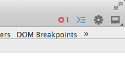
Mobile Debugging
- Newer versions of Chrome should have the phone icon in the top left.
- Instead of just resizing the window, use this guy to get a more accurate view of how Wired looks on mobile, or tablet
- Even sort of emulates touch events? Kinda okay?
- No substitute for a real device, but leagues better than just resizing the window
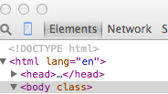
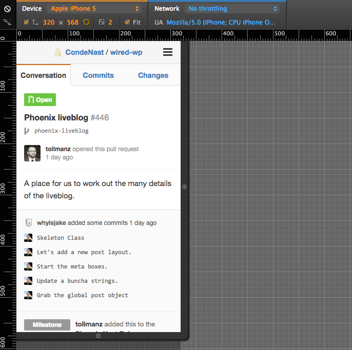
Package Control
- Shift + Cmd + P to bring up Command Palette
- Alternatively, Tools > Command Palette
- Type Package Control
- Commands to know: Install, List, and Remove
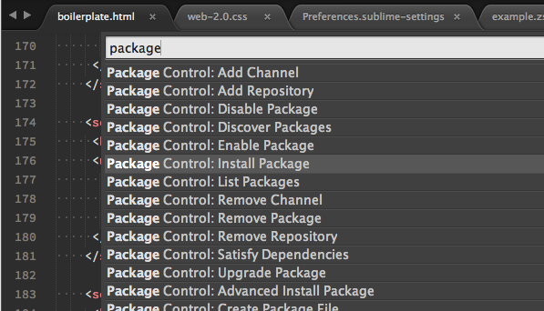
Installing a Package
- Click on Install Package
- Find SublimeLinter (just start typing)
- Click on SublimeLinter
- Bam, you're done son
- If Package Control gives you additional instructions, follow them.
- Occasionally packages have other requirements, like npm modules
Packages I think we should all be using:
- SublimeLinter: With annotations, jshint, jscs, phpcs and phplint
- DockBlockr: consistent documentation
- Stylus: Syntax Highlighter for Stylus
- GitGutter: visually track changes to the repo in sublime
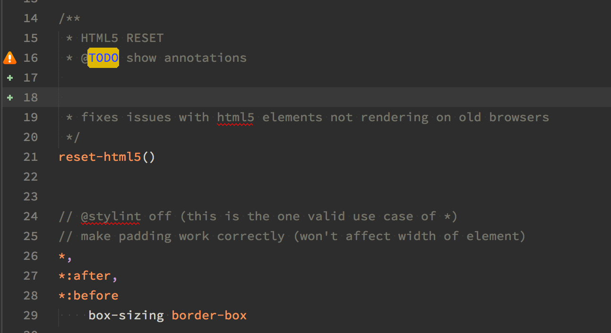
Optional but still, totally cool, packages:
- BracketHighlighter: never lose your place in code again
- ColorHighlighter: hex and rgb values get highlighted in their color
- CanIUse: quickly bring up a browser matrix for your code
- SidebarEnhancements: adds ton of functionality to the sidebar
- Theme: Spacegray. Looks real good.
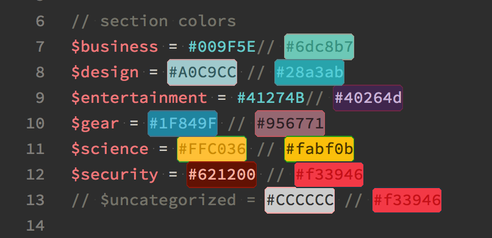
Set your Settings:
- A lot of POWER can be had in settings
- Actually, not that much, but there a couple improvements we can make
- Adjust font size, line height, and toggle functionality on/off
Finding your settings:
- Sublime Text -> Preferences -> Settings - Defaults
- Sublime Text -> Preferences -> Settings - User
- It's just JSON, any settings set here override the ones in default
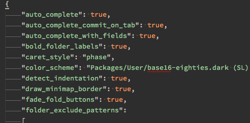
Useful Settings:
- "trim_trailing_white_space_on_save": true - no more whitespace errors
- "draw_white_space": "all" - tabs or spaces?
- "draw_minimap_border": true
- "highlight_line": true - easily see where the cursor is
- "highlight_modified_tabs": true - see what files you've modified easier
- "word_wrap": true - crazy long scripts will wrap
Useful Settings 2:
- Many packages also have settings you can tweak
- Install SublimeLinter-Annotations (just search annotations)
- Tools -> SublimeLinter -> Open User Settings
- You can tweak what annotations does, and the highlight here
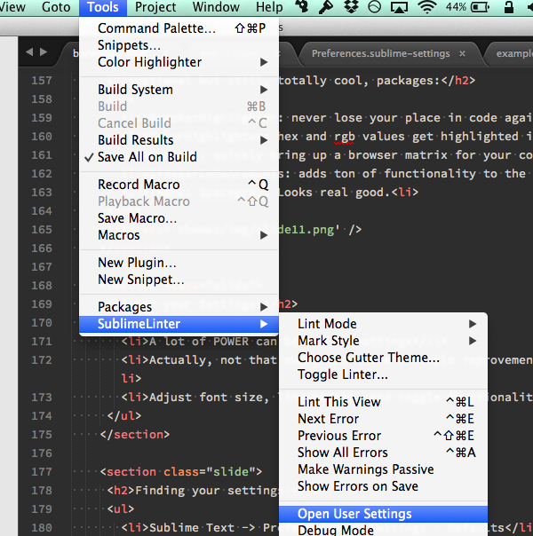
World War Zsh
- The default terminal experience could be better
- Better tab completion, always visible git repos, syntax highlighting
- oh-my-zsh is the most popular variant of zshell
- we're gonna walk through setting up aliases, using plugins, and settings zshell as your default terminal

Set up your shell
chsh -s /usr/local/bin/zsh will change your default shell to zsh- alternatively, you can source zsh in your terminal if you dont want to commit just yet:
source ~/.zshrc
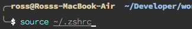
Aliases
- First things first, we're gonna make an alias
- ~/.oh-my-zsh/custom/example.zsh
- The following line will reload zshell, which will come in handy for us soon
alias reload="source ~/.zshrc"- You're gonna have to restart your terminal here, but it will be the last time we'll need to do this
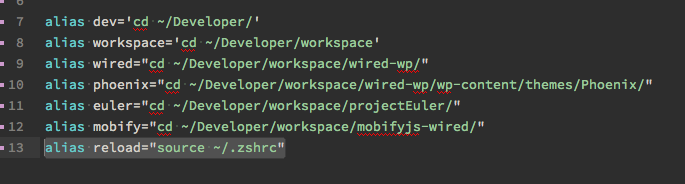
Plugins
- zsh comes with plugins pre-downloaded, they are all accessible by default
- https://github.com/robbyrussell/oh-my-zsh/wiki/Plugins
- Many plugins have dependencies tho, so we're gonna use brew a bit again
Plugins 2
- ~/.zshrc (if you've ever wondered, with dot files, rc stands for runtime config)
- Ctrl+F plugins (should be line 55)
- My Plugins line:
plugins=(git common-aliases dirhistory git-extras zsh-syntax-highlighting)
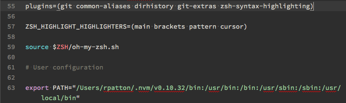
Plugins 3
- We're gonna add the git-extras plugin
- It's super simple: just add git-extras to your plugins in .zshrc
- I picked this one because it has a brew dependency, so now we also need to run brew install git-extras
- Now if you reload (using our alias from earlier) we should have access to all the git-extras commands
- I use git-extras command
git delete-branch quite often
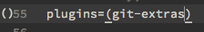
Extra Credit 1: NVM
- This one will be quick, i promise
- Never sudo again (hopefully, i think, we can fix it anyway)
- Use NVM to install specific node versions for testing or experimenting
NVM 2
- You should already have it installed, but it needs to be sourced to use
source ~/.nvm/nvm.sh- You can add this line to your .zshrc or .bashrc file to source on load
- You should be able to type nvm now and get the options list
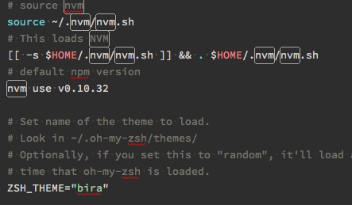
NVM 3
- Commands to know: install, use, ls, and ls-remote
- nvm ls will show all currently installed versions of node, you should see nothing ( or system ) here
- nvm ls-remote will show all possible versions of node
- nvm use [ver-number] is how you switch versions of node
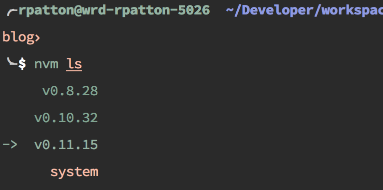
NVM 4
- Let's install v0.11.15 (edge version)
nvm install v0.11.15- we're now using that version of node, and we can easily switch between this edge version and the latest 'stable' release (v0.10.36 currently)
- v0.11.15 has greater support for es6 functionality compared to v0.10.36, useful if you want to play around with that (or just use io.js *cough*)
Extra Credit 2: Homebrew
- So we've been using brew for a lot of stuff, what is it?
- It's yet another package manager, but this time for the mac in general
- All things shell and mac can be had through brew
- Also, beer theme
Useful brews
- Git, NVM, wget
- zsh / oh-my-zsh / zsh plugins
- php / python / ruby
- tons of other stuff
1 problem with Brew
- Needs constant updating and maintenance
- Solution: schedule automatic updates
- https://github.com/mkalmes/brewupdate
- Never
brew update again
Thats it, we're done now
- What should I talk about next?
- Option 1: The DOM
- Option 2: Javascript Fundamentals
- Option 3: Phoenix Front End Overview #2
- Option 4: ES6: Javascript Next
/